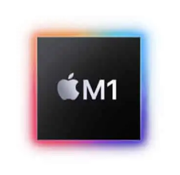
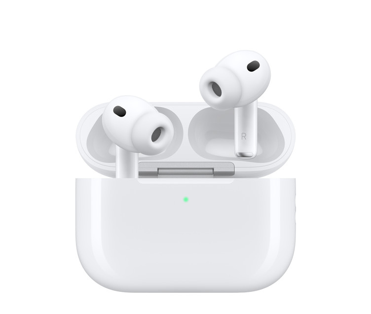
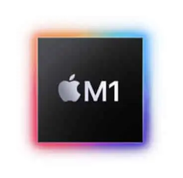
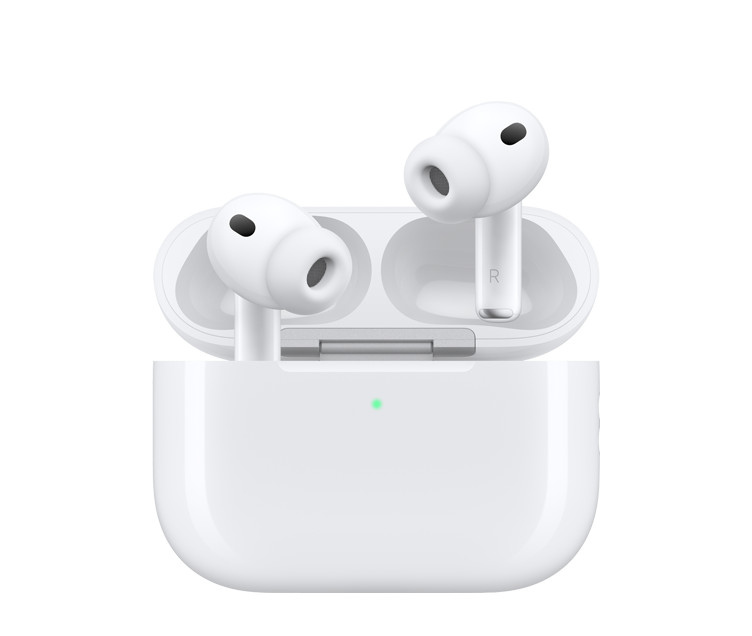
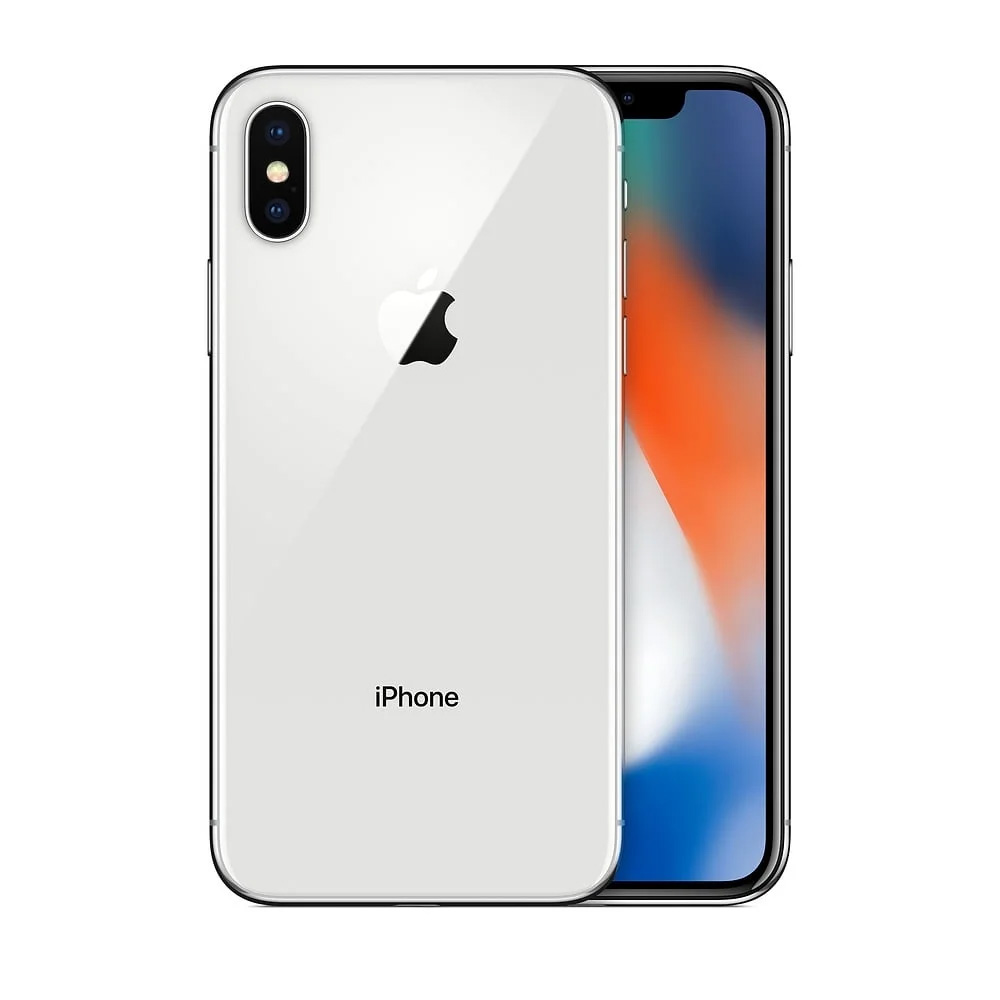
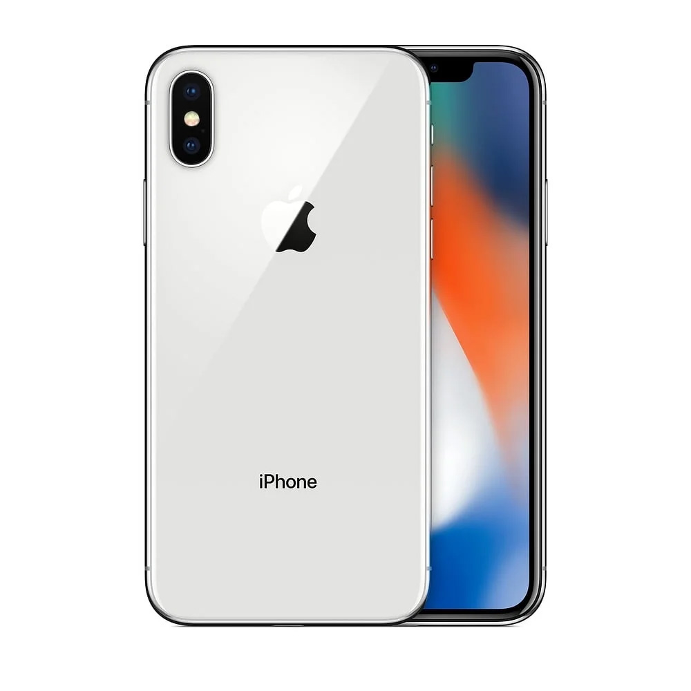

Tim Cook
From Operations Genius to Tech Leader: The Man Who Sustains Apple's Legacy.
From Operations Genius to Tech Leader: The Man Who Sustains Apple's Legacy.
"Life is fragile. We're not guaranteed a tomorrow so give it everything you've got."
Tim Cook is the Chief Executive Officer of Apple Inc., one of the world's most valuable and influential technology companies. Since taking the helm in 2011 following Steve Jobs' death, Cook has led Apple through unprecedented growth, nearly tripling the company's market value and making it the first publicly-traded company to reach a $3 trillion valuation. Known for his meticulous operational expertise, unwavering commitment to privacy and environmental sustainability, and authentic leadership style, Cook transformed Apple from a company dependent on a single visionary into a resilient institution capable of sustained innovation. Beyond business, Cook became the first openly gay CEO of a Fortune 500 company, using his platform to advocate for LGBTQ+ rights, data privacy, and corporate social responsibility in an increasingly interconnected world.
Born November 1, 1960, in Mobile, Alabama, Tim Cook grew up in the small town of Robertsdale as the middle son of Donald Cook, a shipyard worker, and Geraldine Cook, a homemaker. Raised in a Methodist household with modest means, Cook's working-class upbringing instilled in him values of hard work, integrity, and service. He was intellectually gifted from an early age, excelling in mathematics and engineering, and graduated second in his class from Robertsdale High School in 1978.
Cook earned his B.S. in Industrial Engineering from Auburn University (1982), where he developed his passion for operations and systems thinking. He later earned an MBA from Duke University's Fuqua School of Business (1986-1988), graduating as a "Fuqua Scholar." This combination of engineering expertise and business acumen became his professional trademark, equipping him for the operational excellence he would bring to Apple decades later.
"Apple has a culture of excellence that is, I think, so unique and so special. I'm not going to witness or permit the change of it."
Joined AppleSenior Vice President for Worldwide Operations; recruited by Steve Jobs during Apple's turnaround period.
SVP Worldwide Operations. Streamlined supply chain; moved manufacturing to outside contractors; reduced inventory from months to days.
SVP Operations, Sales, Service & Support Expanded role managing global operations.
Executive VP, Worldwide Sales & Operations. Continued operational excellence leadership.
Interim CEO & Macintosh Division Head. Served during Steve Jobs' medical leave for pancreatic cancer surgery.
Chief Operating Officer (COO)Right-hand to Steve Jobs; prepared for eventual leadership.
Interim CEO (again)Led during Jobs' liver transplant recovery period.
Appointed CEO of Apple Following Steve Jobs' resignation.
Became permanent CEO. After Steve Jobs' death from pancreatic cancer.
CEO & Board Member. Leading Apple through its most profitable era
"We don't get a chance to do that many things, and everyone should be really excellent. Because this is our life."
 




 

Go further into depth and learn a little bit more about Tim Cook. He is very interetsing person to learn about!